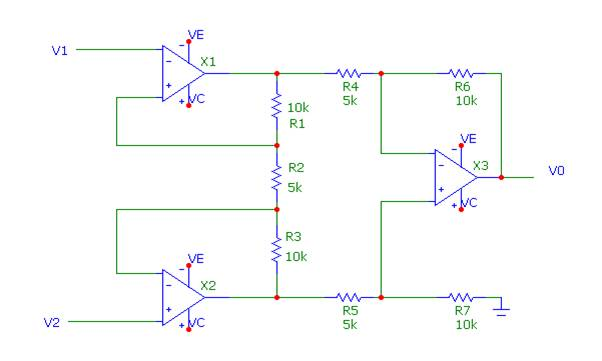
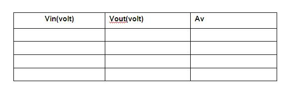

7.2.1. Title of the experiment: Instrumentation amplifier
7.2.2. Aim or objective of the experiment: To construct the Instrumentation amplifier using IC-741
. for the gain 250.
7.2.3. List of the equipment required to conduct the experiment with their specifications:
CRO,Function generator,breadboard,ua741 IC, + 12 V supply,
7.2.4 Experimental set up
 7.2.5 Theoretical background for the experiment /Validation of the experiment:
The output of the transducer has to be amplified to drive the indicating or driving system. This function is performed by instrumentation amplifier. The important
features are: 1) High gain accuracy, 2) High Common mode rejection ratio, 3) High gain stability with low temperature coefficient,4) Low DC offset, 5) Low output impedance
7.2.6. Formulae required, nature of graph if any: Not applicable.
7.2.7. Step by step Procedure to carry out the experiment:
1. Connections are given as per the circuit diagram.
2. Set the DC input voltage as 1 mV.
3. Note down the output voltage.
4. Calculate the gain and compare it with theoretical gain.
5. Repeat it for different input values
7.2.8. Table of observations:

7.2.9. Specimen calculations:
Let av1=av2
=√av
I2=100Ibmax
R2=Vi/I2
Av(dif)=(2R1+R2)/R2
R3=R1
Vo=Av*Vi
I5=100Ibmax
R5=Vo/I5
R4=R5/Av2
R6=R4
R7=R5±20%
7.2.10. Plotting of graph: N.C
7.2.11. Discussion of results and conclusions: